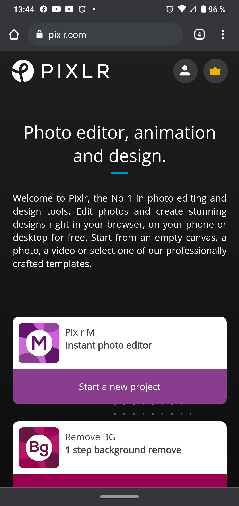

Visual Hierarchy
Github
github.com
The Github website is a great example of the use of hierarchy, they use the font size very well to emphasize the purpose of the website, at the same time the colors used to present each thing as well as the space to sign up give a sense of order.
Hick's Law
Samsung
samsung.com
When you visit samsung.com, it urges you to buy something from the first sight. It gives you encouragement by displaying product graphics. Hick's law ensures that the more options the user has, the longer it will take to reach a decision. Therefore, everything that facilitates and speeds up the user's decision process is related to Hick's law. This is well exemplified on this page.
PARC: Contrast
Pixlr
wistia.com
When you want to enter pixlr.com, the color they use to contrast between the options is well thought out. Specifically so that the user does not waste time and goes directly to what they are looking for on this page, which is to edit a photo. Contrast in web design can be used to highlight the elements that we are most interested in that the user perceives clearly.